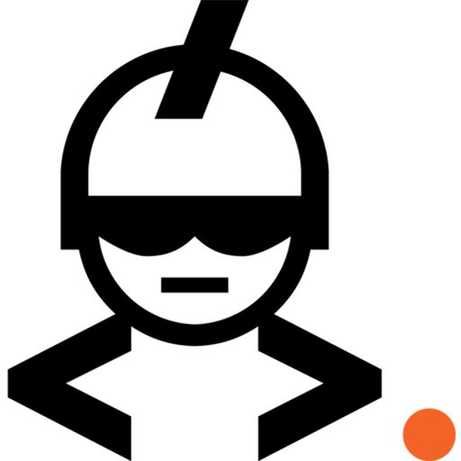

BraveOrange is opgericht door en voor IT specialisten
BraveOrange is een IT-bedrijf opgericht door software engineers. Wij werken uitsluitend met de beste
specialisten. Omdat BraveOrange jarenlang ervaring heeft kennen wij verschillende werkomgevingen en
manieren van werken.

Detachering of een volledig IT project? Wij kunnen het!
BraveOrange biedt verschillende diensten aan. Of het nu gaat om een IT-professionals gaat of om een
software implementatie vraagstuk, wij kunnen het aan! Wij werken met een breed netwerk van klanten en
IT-professionals binnen ons netwerk. Omdat BraveOrange is opgericht door IT-specialisten zijn wij in
staat om de juiste match tussen opdrachten en professionals te garanderen.
BraveOrange Community

Eline Kors
Business development
Anderen over Eline op LinkedIn
Tijdens de inzet waardeerde ik haar heldere communicatie en betrokkenheid.Günter - senior BI consultant

Ferry de Goeij
Community consultant
Anderen over Ferry op LinkedIn
Die bereidheid om "the extra mile" te gaan met onvermoeibaar enthousiasme maakt Ferry een uitzondering op de regel.Dirk - senior functioneel beheerder
Ante Znaor
Digital innovator
Anderen over Ante op LinkedIn
Ante is een stabiele kracht waar je op kunt rekenen.Martin - ICT manager
Nikola Znaor
Creative director
Anderen over Nikola op LinkedIn
Dvlpr?